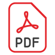

Journal of Educational Research and Development
The Journal of Educational Research and Development, published by the National Academy for Educational Research, is a scholarly journal focusing on issues related to research and development (R&D) in the field of education. It is dedicated to promoting academic research and scholarly exchange both domestically and internationally.
- Frequency: Quarterly (four issues per year)
- First Published: 2005
- Recognition: TSSCI Tier 1 Core Journal
- Format: Online Journal
- ISSN：1816-6504
Editors' Note
The articles featured in this issue of the Journal of Educational Research and Development showcase a diverse range of scholarly topics. Each manuscript has undergone a rigorous anonymous peer review process and meticulous revisions by the authors. Following a final review and discussion by all members of our Editorial Board, the decision was made to accept the following three articles for publication. The first two are general academic articles, while the third is a contribution published in response to current trends in educational research...more
| Category | Title / Author | Full Text |
|---|---|---|
| Articles | 探討影響世界技能競賽績效因素及對臺灣技職教育政策之啟示 |  |
| 得勝者教育協會情緒管理課程對青少年情緒智力的成效 | ||
| 探討影響世界技能競賽績效因素及對臺灣技職教育政策之啟示 | ||
| Forum | 十二年國教課綱自然和社會領域「探究與實作」理念的溝通與實踐 | |
| 十二年國教課綱倡議的溝通與實踐──從編撰教科書到十二年國教課綱「探究與實作」的研修兼談未來教育 |
Editors' Note
The articles featured in this issue of the Journal of Educational Research and Development showcase a diverse range of scholarly topics. Each manuscript has undergone a rigorous anonymous peer review process and meticulous revisions by the authors. Following a final review and discussion by all members of our Editorial Board, the decision was made to accept the following three articles for publication. The first two are general academic articles, while the third is a contribution published in response to current trends in educational research...more
| Category | Title / Author | Full Text |
|---|---|---|
| Articles | 探討影響世界技能競賽績效因素及對臺灣技職教育政策之啟示 | |
| 得勝者教育協會情緒管理課程對青少年情緒智力的成效 | ||
| 探討影響世界技能競賽績效因素及對臺灣技職教育政策之啟示 |
The Journal of Educational Research and Development, published by the National Academy for Educational Research, is a scholarly academic journal focusing on issues related to Research and Development (R&D) in the field of education. It aims to promote academic research and scholarly exchange both domestically and internationally. The submission and review processes for all manuscripts adhere to the regulations of the Taiwan Social Sciences Citation Index (TSSCI) database. Submissions are welcome. 1. Call for Papers (1) This journal is a quarterly publication that accepts submissions year-round, with issues published in March, June, September, and December. The scope of submissions includes original research articles in the following areas: "Teacher Education and Professional Development," "Curriculum and Instruction," "Educational Policy and Systems" (including educational administration, school administration, etc.), and "Educational Psychology, Counseling, and Assessment" (including educational statistics). Since January 1, 2023, the journal has focused exclusively on research related to innovations in theory, policy, and practice within these four major fields. The journal aims to gather and serve as a vital reference for the National Academy for Educational Research by encouraging inquiry and analysis of educational issues from various perspectives. (2) Starting from Volume 16, Issue 1 (2020), the journal has introduced a new section titled "Review of Research Trends." The Editorial Board may also invite scholars and experts to contribute reviews on significant topics within the journal's four main fields. These contributions synthetically review research trends on a given topic, using either literature analysis or scientific methods, to guide future research directions. (3) All submissions are reviewed on a rolling basis. In principle, the editorial office will complete the review process and notify the author of the publication decision (accepted or rejected) within five months of receipt. 2. Submission Guidelines (1) Manuscripts can be written in either Chinese or English. * Chinese Manuscripts: The length should be approximately 15,000 words, with a maximum of 20,000 words (inclusive of abstracts, notes, references, appendices, figures, and tables). The revised manuscript, after passing the review, must not exceed 22,000 words. The Chinese abstract should not exceed 500 words, the English abstract should not exceed 300 words, and each should be accompanied by 3 to 5 keywords. * English Manuscripts: The word count should not exceed 12,000 words. (2) Submissions must be made through the online submission system. Authors are required to register and upload the abstracts (both Chinese and English) and the full manuscript file (in Word or PDF format) at [http://140.122.97.163/index.php/JERD/login]. Authors must provide detailed information for all co-authors, including their affiliations, highest academic degree, fields of expertise, contact telephone number, and email address, to facilitate identity verification by the editorial office. (3) To ensure a blind review, please do not include any personal identifying information in the main text or the abstracts of the manuscript. (4) Footnotes (not endnotes) and references must follow the latest edition of the APA style guide. Detailed formatting guidelines can be downloaded from the journal's website or requested by mail (please include a self-addressed, stamped envelope) from the editorial office. (5) Manuscripts that do not conform to the required format will be returned to the author without review. (6) If a submission is not accepted for publication, the author will be notified of the review outcome. The manuscript will not be returned; authors should retain a copy of their original work. (7) The journal reserves the right to make necessary editorial changes to the text for clarity and consistency. (8) For manuscripts with two or more authors, the specific contributions of each author must be clearly stated. (9) An author is not limited to submitting only one manuscript per issue. However, if an author has two or more manuscripts accepted for the same issue, the Editorial Board will decide which manuscript(s) to publish, the number of articles, and the issue of publication. For the accepted manuscript(s) not published in the current issue, the author will be informed of the scheduled publication issue, and their consent will be sought. As a general principle, publication will occur within one year. 3. Copyright and Intellectual Property (1) To uphold academic ethics, simultaneous submission to other publications is strictly prohibited. Authors are solely responsible for any legal liabilities arising from plagiarism, improper rewriting, or other infringements of copyright. (2) This journal operates on a non-exclusive license basis granted to the publisher. Once a manuscript is accepted for publication, authors are required to sign a Copyright Licensing Agreement and return it to the editorial office by registered mail within the specified deadline. 4. Manuscript Review Process (1) All manuscripts undergo a double-blind peer review process. The Editorial Board will select two experts in the relevant field to serve as reviewers. For manuscripts that receive a "revise and resubmit" decision, the final publication decision will be made by the Editorial Board after the author has revised the manuscript accordingly. (2) Accepted manuscripts may be scheduled for publication in a future issue at the discretion of the Editorial Board, based on editorial needs and with the Board's approval.
審稿辦法審稿辦法審稿辦法審稿辦法審稿辦法審稿辦法審稿辦法審稿辦法審稿辦法審稿辦法審稿辦法審稿辦法審稿辦法審稿辦法審稿辦法審稿辦法審稿辦法審稿辦法審稿辦法審稿辦法審稿辦法審稿辦法審稿辦法審稿辦法
| 主編 | 楊洲松 國立暨南國際大學副校長 |
|---|---|
| 編輯委員 |
王如哲 國立臺中教育大學教育學系特聘教授 余民寧 國立政治大學教育學院特聘教授兼院長 侯永琪 國立政治大學教育學系教授 張新仁 財團法人大學入學考試中心主任 甄曉蘭 國立臺灣師範大學教育學系教授 蔡清田 國立中正大學教育學研究所教授 龔心怡 國立彰化師範大學教育研究所教授 陳昀萱 國家教育研究院教育制度及政策研究中心副研究員 蔡明學 國家教育研究院教育制度及政策研究中心研究員 |
| 執行編輯 | 林于郁 國家教育研究院教育資源及出版中心主任 |
| 主編 | 楊洲松 國立暨南國際大學副校長 |
|---|---|
| 編輯委員 |
王如哲 國立臺中教育大學教育學系特聘教授 余民寧 國立政治大學教育學院特聘教授兼院長 侯永琪 國立政治大學教育學系教授 張新仁 財團法人大學入學考試中心主任 甄曉蘭 國立臺灣師範大學教育學系教授 蔡清田 國立中正大學教育學研究所教授 龔心怡 國立彰化師範大學教育研究所教授 陳昀萱 國家教育研究院教育制度及政策研究中心副研究員 蔡明學 國家教育研究院教育制度及政策研究中心研究員 |
| 執行編輯 | 林于郁 國家教育研究院教育資源及出版中心主任 |